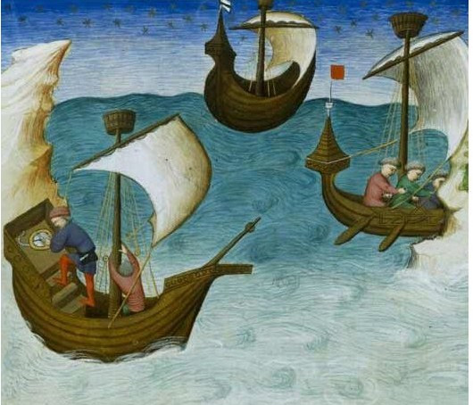
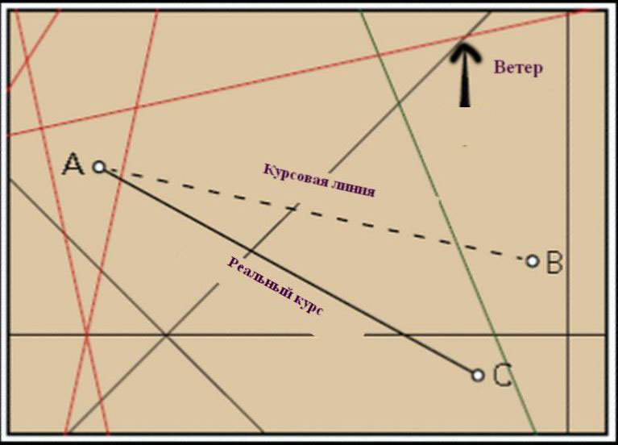
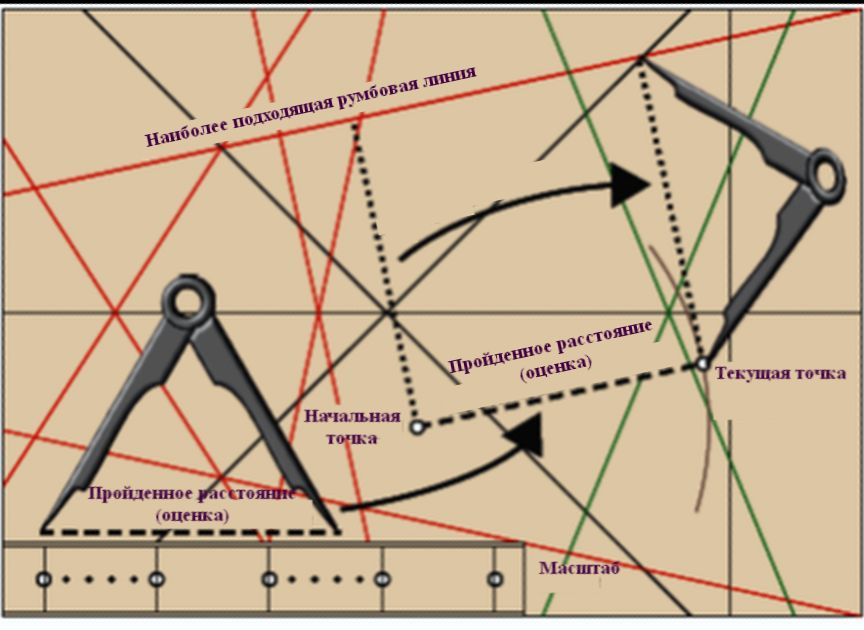

Сохранившиеся документы свидетельствуют о возрождении в одиннадцатом веке активного мореходства в Средиземном море. Генуя и Пиза, после изгнания мусульман с Корсики и Сардинии, превратились в крупные морские государства. Успехи нормандских завоевателей на Сицилии, союз между Венецией и Византией, первые крестовые походы еще больше способствовали формированию мореходства в Средиземноморье. Эта тенденция получила развитие и в XII-XIII веках в ходе частых конфликтов между христианами и мусульманами и между самими христианскими державами. Наряду с уже существующими на средиземноморскую арену вышло новое государство, претендующее на свое место в регионе: королевство Арагон добилось изгнания мавров с Майорки и других Балеарских островов в период между 1229 и 1231 гг.
Именно в этот период на Средиземном море появляются первые навигационные инструменты. Астролябия впервые упоминается в 1024 году. Уже в XIII в. в описях имущества кораблей отмечены песочные часы (‘orologium’). Посох Якова (vara de Jacob, ballastella, balestilha или khashaba ) впервые описан в начале XIV века. Тогда же был создан прототип секстанта – квадрант. Компас также появляется в Европе в это время.

Моряк, сверяющий курс корабля с показаниями компаса. Первое известное изображение использования компаса на борту корабля. Из копии манускрипта 1403 г. Jehan de Mandeville (John Mandeville), Le livre des merveilles, Bibliotheque national de France
(Мы пока не планируем подробно касаться истории компаса, считая ее хорошо известной. Разве что несколько слов скажем при удобном случае об истории компаса в Китае, которая у нас освещена, на мой взгляд, недостаточно.)
Ранее мы отмечали, что как раз тогда появились первые текстовые портоланы, а за ними и портолан-карты. И если перечисленные выше навигационные инструменты с трудом внедрялись в практику кораблевождения на Средиземном море и их широкое применение не отмечается вплоть до XVIII века, то с морскими картами дело обстоит по другому. Документы той эпохи подтверждают, что портолан-карты использовались на борту кораблей в море начиная с XIII века. Так, в 1354 г. по указанию короля Арагона Педро IV адмирал флота короны Бернат де Кабрера опубликовал регламент (Ordinacions), в котором, в частности, предписывается на каждой большой галере (Galera gruesa) иметь две навигационные карты (dos cartas de marear).
Однако в очень малом числе сохранившихся документов раскрывается, каким образом это использование осуществлялось. Впервые применяемые при этом методы упоминаются в сочинении каталанского мыслителя Раймунда Луллия «Древо наук» (Arbor Scientiae), написанном им в Риме между 1295 и 1296 годами. Луллий, францисканский терциарий с Майорки, описал тригонометрические расчеты (естественно, не используя современной нам символики), которые необходимо произвести для возвращения корабля с реального курса, сложившегося под воздействием ветра и течений, к предварительно проложенному генеральному курсу, ведущему к пункту назначения. Эти тригонометрические расчеты впоследствии были сведены в таблицы, известные как Toleta de Marteloio, которые прилагались к некоторым атласам портолан-карт. Первым таким атласом был атлас Андреа Бьянко (1436). Однако приложенная инструкция по пользованию этой таблицей была очень сложной, носила скорее академический характер и вряд ли подходила для применения в практической навигации. Первый алгоритм, пригодный для практической работы штурмана, мы встречаем в неопубликованном рукописном трактате De Navigatione (1464-65) Бенедетто Котрульи (Benedetto Cotrugli). Хотя к тому времени уже появилась астролябия, однако задачи практической навигации решались без учета значений широты. Это объяснялось особенностями формы и ориентации Средиземного моря, когда в большей части протяженных плаваний широта изменялась незначительно.
Посмотрим, каким образом Котрульи описывает работу штурмана с картой. Прежде всего необходимо было определить текущее положение корабля, затем найти положение пункта назначения и соединить обе эти точки прямой курсовой линией. После этого определяли, какая из румбовых линий на карте более всего подходит к ней по направлению. (Легче всего это сделать с помощью параллельной линейки, но этот навигационный инструмент был изобретен только около 1584 года "богом геометров" (по определению Дж. Бруно) Фабрицио Морденте, а в навигационную практику вошел, дай бог, в семнадцатом веке.)

После проведения генерального курса AB, навигатор, основываясь на своих знаниях и опыте, а также сверяясь с записями в текстовых портоланах о господствующих в это регионе ветрах, течениях, о навигационных опасностях по пути следования, выбирал реальный курс AC, которым он должен идти.
Если ветер попутный, а существенных течений нет, то фактический, реальный курс совпадал с генеральным курсом, а следовательно, с соответствующей румбовой линией на карте.
После этих предварительных действий корабль пускался в путь по реальному курсу. Б.Котрульи пишет в своем руководстве, что основной задачей штурмана теперь становится контроль скорости судна. Скорость оценивали, исходя из мореходных качеств корабля, силы ветра и течения. Успех этой работы всецело определялся квалификацией штурмана. (Мы в нашем журнале уже касались способов измерения скорости на ранних этапах морской истории. Здесь уместно будет, видимо, привести отрывок из сочинения Платона Яковлевича Гамалеи, на которого все ссылаются, но никто его почему-то не цитирует:
§. 238. Многіе изъ нихъ (мореплавателей – g._g.), особливо на купеческихъ судахъ, и лага вовсе не упопребляютъ. Они, желая знать ходъ, бросаютъ съ носу, съ подвѣтренной стороны, въ воду щепку, и считаютъ во сколько секундъ дойдетъ она къ кормѣ; откуда, зная длину судна, скорость его вычисляютъ. Секунды считаютъ не по часамъ, а по нѣкоторымъ словамъ, каково естъ эйненъ-твентихъ, которое обыкли они произносить ровно въ секунду.
§. 239. Наконецъ, опытные мореходцы, взглянувъ только на пѣну движущуюся у подвѣтреннаго борта, могутъ заключить о скорости судна, съ точностію до ¼ узла простирающеюся.
Гамалея, Платон Яковлевич (1766-1817). Теория и практика кораблевождения , ч.I, 1830, с.137)
Чтобы избежать значительных отклонений от курса, чреватых заходом в опасные ддя плавания районы, Котрульи рекомендует штурману определять текущее положение корабля каждый час, откладывая пройденное расстояние на линии курса. Эту операцию он называет apuntar – «нахождение точки» (по-английски операцию называют 'pricking a chart' (накалывание на карту) или иногда ‘taking point’ (взятие точки)). Для операции необходима карта и два циркуля (sestes). Котрульи описывает «нахождение точки» следующим образом. Одним циркулем с линейного масштаба на карте снимают пройденное расстояние, которое оценивают исходя из скорости судна. Затем этим раствором циркуля проводят дугу в направлении предполагаемого движения судна. С помощью второго циркуля проводят курсовую линию, параллельную избранной румбовой линии.

Расчетное место нахождения корабля получается в результате пересечения построенной линии и дуги.
Трактат Бенедетто Котрульи является практически единственным документом, в котором описывается использование портолан-карт для навигации в море. И лишь после начала использования навигационных инструментов и привлечения для практической навигации достижений мореходной астрономии начался новый этап работы штурмана с морскими картами. Но об этом мы расскажем в следующий раз. Тогда же вернемся к Раймунду Луллию и его Toleta de Marteloio.